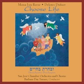
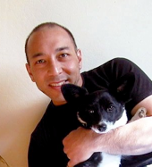
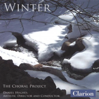
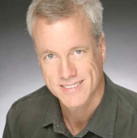

All CDs are $17.00, which includes tax and shipping.
All CDs are now available directly from SJCO online.
All CDs are now available directly from SJCO online.
Choose Life by Mona Lyn Reese

Tender God Have Mercy
Choose Life
EKTA: Music by Brent Heisinger
MIKEY: The Works of Michael Touchi

Tango Barocco
Nocturn
Also available on Amazon.com
Michael Touchi is one of Northern California's up and coming young composers. His recently released Tango Barocco cd is a must-hear for Vivaldi fans. Michael’s performance is crisp and light-hearted with carol arrangements that are fresh and inventive interpretations of standard works.
Winter by The Choral Project and SJCO

Available on Amazon.com
The 2005 collaboration between The Choral Project and The San José Chamber Orchestra.
Saints and Other Works

The Mouth of God
Pentimento
Also available on Amazon.com
Craig Bohmler (Composer), Barbara Day Turner (Conductor), San José Chamber Orchestra (orchestra).